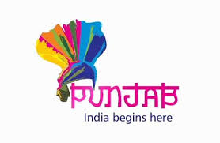
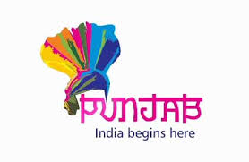
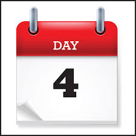
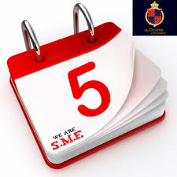
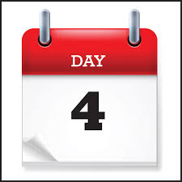
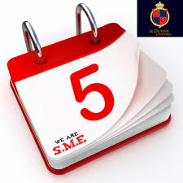

Day 02 :
Welcome to Dharamshala – formerly known as Bhagsu one of the spiritual dwelling in Himachal Pradesh. On arrival we visit Bhagsunag Temple and Dalai Lama Monastery. Later we visit the Dal Lake – known for its scenic beauty. Enjoy shopping at Macleodganj Bazaar in evening /free time for Relaxation. Overnight at Dharamshala.

Day 03 :
Welcome to Dalhousie. On arrival in Dalhousie evening free for leisure or you can have a walk through small town of Dalhousie .Overnight at Dalhousie

Day 04 :
Today visit Khajjiar popularly known as “Mini Switzerland” of India , enjoy various sports activities like Zorbing, horse riding etc. at your own. We visit the Ajith Singh Smarak and Satadhara Sparkling Springs. Overnight at Dalhousie.

Day 05 :
After breakfast proceed to Chandigarh/Delhi Airport to board flight /train to your hometown.Holiday Concludes.
CONFIRM YOUR TOUR RIGHT HERE....

Click here to logout


Day 04 :
Today visit Khajjiar popularly known as “Mini Switzerland” of India , enjoy various sports activities like Zorbing, horse riding etc. at your own. We visit the Ajith Singh Smarak and Satadhara Sparkling Springs. Overnight at Dalhousie.

Day 05 :
After breakfast proceed to Chandigarh/Delhi Airport to board flight /train to your hometown.Holiday Concludes.
CONFIRM YOUR TOUR RIGHT HERE....
Click here to logout
CONFIRM YOUR TOUR RIGHT HERE....
Click here to logout